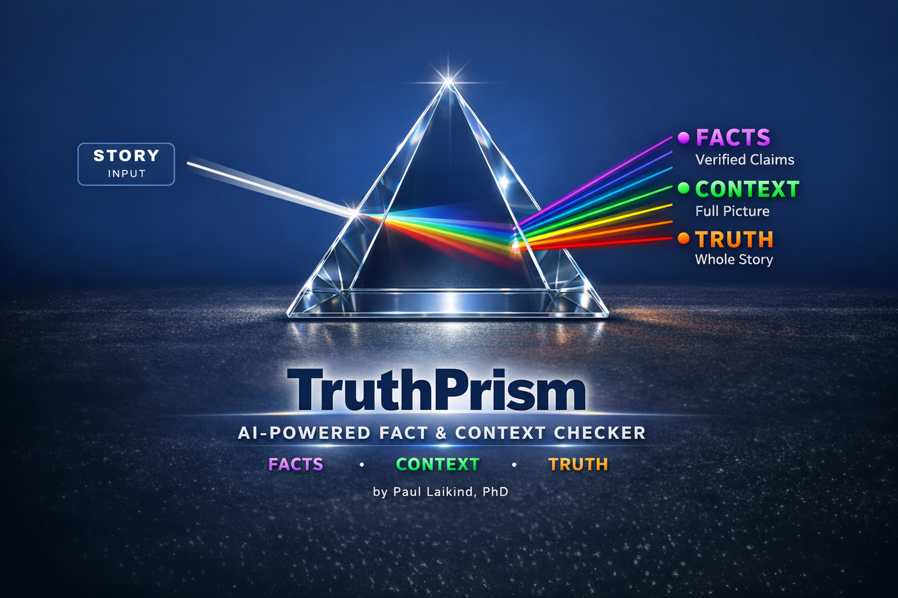

TruthPrism uses advanced AI to analyze news articles and claims — exposing bias, verifying facts, and giving you a clear confidence score in seconds.
2 free checks included · Chrome & Edge extensions available · Works on any article
Paste any article URL or text and get a detailed analysis of key claims — verified against trusted sources in seconds.
Beyond just facts, TruthPrism evaluates whether an article provides the full picture — flagging missing context, framing issues, and what's left unsaid.
Every analysis produces a clear Factual Score out of 10, so you always know how credible the claims in what you're reading actually are.
Use TruthPrism as a Chrome or Edge browser extension while you browse, as a web app on any device, or on iPhone via the iOS share sheet.
Enter your email in the app to receive a free trial code — 2 checks, no credit card required. Prism Packs available for continued use.